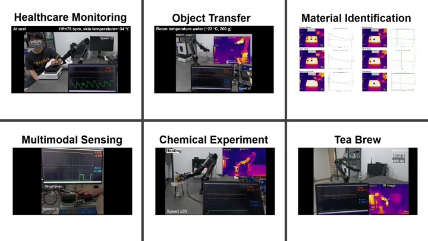
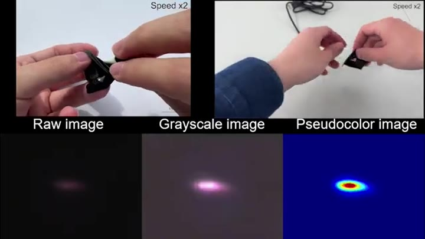
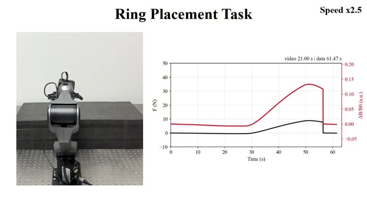

RoboTac Skin
ACS Nano · 2026
A soft ionic skin that independently senses force and temperature during robotic contact.
Research Fellow, Department of Mechanical Engineering
National University of Singapore

I study tactile intelligence for embodied robotics. At the G&M Lab, I work with Prof. Jianshu Zhou on soft multimodal sensors, electronic skin, and learning-enabled tactile perception for robots and human–robot interaction.

ACS Nano · 2026
A soft ionic skin that independently senses force and temperature during robotic contact.

Advanced Science · 2026
A soft optical skin that converts contact force into light for high-resolution tactile imaging.

IEEE Transactions on Instrumentation and Measurement · 2026
A soft magnetic cilia sensor that detects normal force and the direction of tangential contact.
From September 2024 to July 2026, I was a postdoctoral fellow with Prof. Wen Jung Li at the WJL Research Group, City University of Hong Kong. I also collaborate with Prof. Xinge Yu.
I received my Ph.D. in Mechanical Engineering from City University of Hong Kong in September 2024 under the supervision of Prof. Wen Jung Li and Prof. Yajing Shen. I earned my B.Eng. in Measurement and Control in June 2020 from the College of Automation at Harbin Engineering University, under the supervision of Prof. Zhiguang Feng.